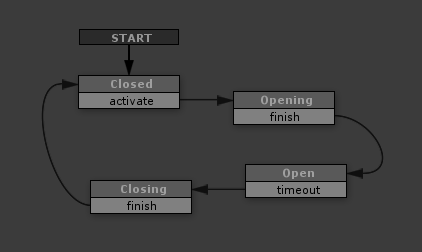

- This FSM starts in the Closed state.
- If the Closed state receives an activate event (someone pushed the button), the FSM transitions to the Opening state.
- The Opening state plays an animation to slide the door open.
- When the animation ends it sends a finish event, and the FSM transitions to the Open state.
- The Open state waits for a few seconds before sending a timeout event, and the door starts closing.
- When the Closing animation finishes it sends a finish event and the FSM transitions to the Closed state.
This might seem like a lot of states for a sliding door... why not just Open and Closed?
In this case, the door is an animated object, and we've essentially made a state for each animation: closed, opening, open, closing.
State machines are a great way to control animation playback, particularly when you start to create branching behaviors.
But there are other reasons you might want these states. Remember, states are a way for an object to tell other objects about itself. Actors using this sliding door will seem smarter if they react to each of these states.
For example:
- If the door is Closed, the actor Presses the button then Waits.
- When the door starts to open, the actor Watches the door open.
- Once the door is Open, the actor Enters the door.
It looks like the actor sees the world and understands what's happening, but really the door is just telling the actor its current state!